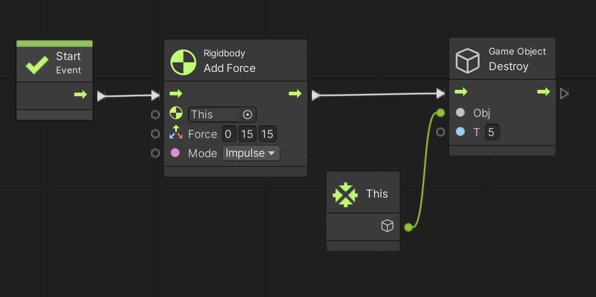
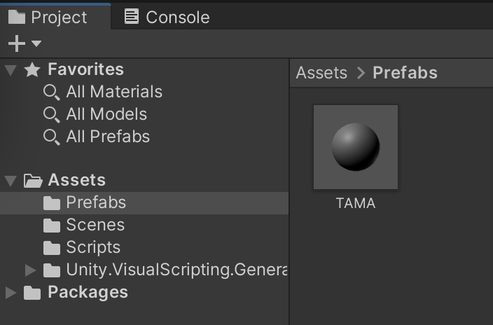
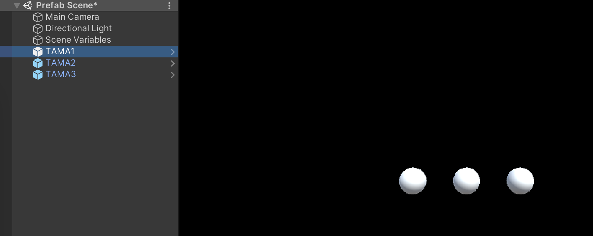
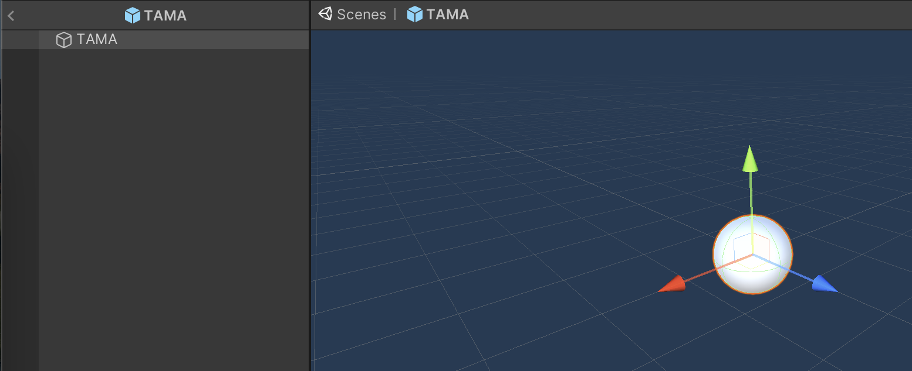
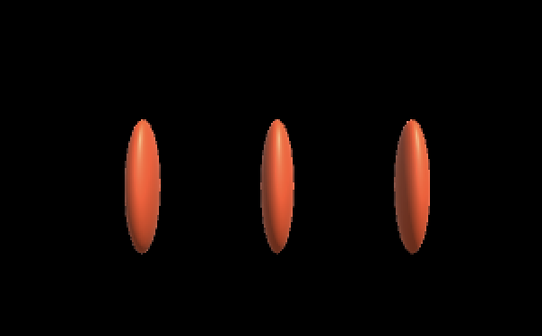
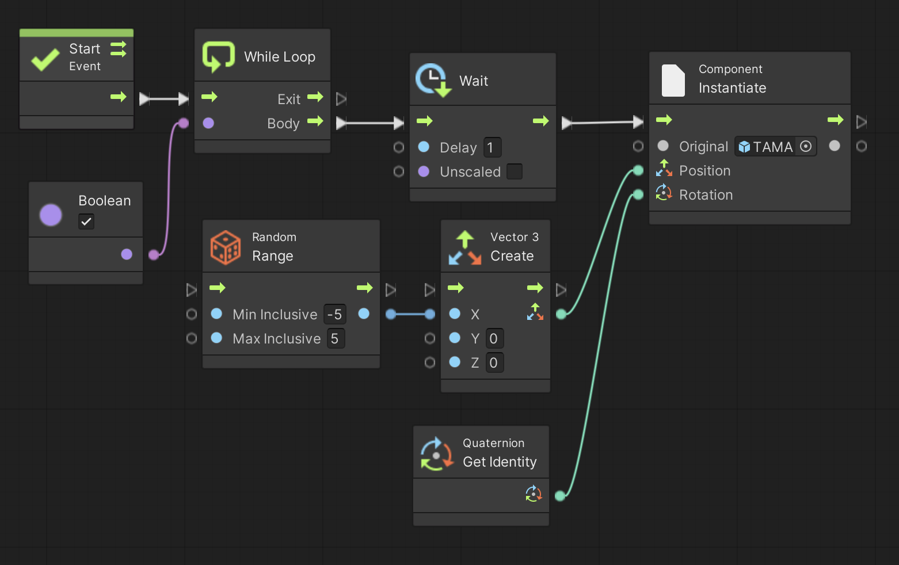

ゲーム中では敵を出現させたり、弾を発射したりなど、既存のゲームオブジェクトをコピーして使いまわしたい場合が多いです。
その際に、ヒエラルキーにあるゲームオブジェクトをコピーして使うよりも便利な「プレハブ (Prefab)」という機能があります。
ここではプレハブの使い方について説明します。
※ ちなみに英語ではプレファブとかプリファブと発音します
演習を行う前に準備をしましょう。
アセットフォルダの Scenes フォルダの中にシーンを新規作成し、シーン名を「Prefab Scene」にする。背景色は任意で構わない
新規作成したシーンへ移動する
ヒエラルキー右クリック → 3D Object → Sphere で球を新規作成し、名前を「TAMA」、Position を (0,0,0)にする
TAMA に Rigidbody をアタッチする。
次にこちらを参考にして Visual Scripting のセットアップもします。
Scripts フォルダの中に入り、空いている部分を右クリックしてメニューを表示し、Create → Visual Scripting → Script Graph を選ぶ
Scripts フォルダ内に「New Script Graph」というアセットが出来るので「Prefab Script」に名前を変更する
TAMA に Script Machine コンポーネントをアタッチする
Script Machine の Graph の None と書いてあるセルに Prefab Script をドロップする
次に Prefab Script を開いて以下の図 1 のスクリプトを入力して下さい。
単に Start イベントの中で Rigidbody Add Force ユニットを使って斜め上方向に力を加えて飛ばしているだけのスクリプトです。
mode を Impulse にするのを忘れないで下さい。
図1. Prefab Script

では早速以下の手順で TAMA をプレハブ化してみましょう。
アセットフォルダの空いている部分を右クリックしてメニューを表示し、Create → Folder でフォルダを新規作成し、「Prefabs」という名前に変更する
Prefabs フォルダの中に入る
ヒエラルキーの TAMA を Prefabs フォルダにドラッグ＆ドロップすると TAMA がプレハブ化される(図2)
図2. TAMA のプレハブ化

ヒエラルキーの TAMA を削除する
プレハブをコピーしてゲームオブジェクトを作成するには、単に TAMA プレハブをヒエラルキーにドロップするだけです。
名前と座標(Position)は適宜変更可能です。
ここでは以下の 3 つのゲームオブジェクトを作って下さい。
名前: TAMA1、 Position: (0,0,0)
名前: TAMA2、 Position: (2,0,0)
名前: TAMA3、 Position: (-3,0,0)
ヒエラルキーとゲームビューは図3のようになります
図3. プレハブのコピー

ある既存のゲームオブジェクトをコピーしていくつも画面上に表示したい場合があります。
ここで説明した様にヒエラルキーにあるゲームオブジェクトを右クリック → Dupulicate でコピーすることも可能ですが、コピーしたゲームオブジェクトは元のゲームオブジェクトとは別の個体になるため、元のゲームオブジェクトを編集しても何もおきません。
一方プレハブからゲームオブジェクトをコピーして作った場合は、元のプレハブを編集するとコピーして作ったゲームオブジェクトも自動的に編集されます。
例えば次の手順で TAMA プレハブの編集を行なってみましょう。
ゲームビューからシーンビューに画面を切り替える
Prefabs フォルダの TAMA プレハブをダブルクリックすると編集画面に切り替わり、ヒエラルキーとシーンビューには TAMA だけが表示される(図4)。
図4. TAMA プレハブの編集画面

試しに大きさを変える。インスペクタの Scale を (0.5,2,1) にする。
色も変えてみる。アセットフォルダの空いている部分を右クリックしてメニューを表示し、Create → Folder でフォルダを新規作成し、「Materials」という名前に変更する。
Materials フォルダの中に入り、空いている部分を右クリックしてメニューを表示し、Create → Material を選ぶ ※ Physic Material の方を選ばないよう注意
Materials フォルダ内に「New Material」というアセットが出来るので「Prefab Material」に名前を変更する
ここを参考に色を変更する(色は任意で結構です)
ヒエラルキーの TAMA に Prefab Material をドロップすると色が変わる
図4 の左上の「＜」マークをクリックして TAMA の編集画面から抜ける
ゲームビューに画面を切り替える
すると図5の様に TAMA プレハブをコピーして作った TAMA1、2、3の形や色も変わります。
図5. 元のプレハブを編集するとコピー先も変わる

自分や敵の弾など、ゲーム中に何千とか何万個も現れるゲームオブジェクトを始めからヒエラルキー上用意しておくと大変なことになります。
その様な状況ではスクリプトを使って任意のタイミングでプレハブをコピーしてゲームオブジェクトを作成することになります。
まず次の手順でマネージャ役のゲームオブジェクトを新規作成して下さい
ヒエラルキー右クリック → Create Empty で GameObject というゲームオブジェクトを新規作成し、名前を「Manager」にする (Position は適当で良いです)
Scripts フォルダの中に入り、空いている部分を右クリックしてメニューを表示し、Create → Visual Scripting → Script Graph を選ぶ
Scripts フォルダ内に「New Script Graph」というアセットが出来るので「Prefab Manager Script」に名前を変更する
Manager に Script Machine コンポーネントをアタッチする
Script Machine の Graph の None と書いてあるセルに Prefab Manager Script をドロップする
次に Prefab Manager Script を開いて以下の図 6 のスクリプトを入力して下さい。
スクリプト内に出てくる Compoent Instantiate (Origianl, Position, Rotation) ユニットがプレハブをコピーするユニットです。
Compoent Instantiate ユニット内の Original にはコピー元のプレハブを指定します。
最初 None と書いてあるので、そこに Prefabs フォルダ内の TAMA プレハブをドロップして下さい。
Compoent Instantiate ユニット内の Position にはコピー先の座標を指定します。
今回は Vector3 Create ユニットと Random Range ユニット(Max Inclusive 版) を使ってランダムに x 座標を決めています。
Compoent Instantiate ユニット内の Rotation にはクォータニオンによって初期角度を指定します。
今回は無回転を意味する Quaternion Get Identity ユニットを指定しています。
なお Start ユニットはコルーチン化して下さい。
コルーチン化し忘れると Unity エディタがフリーズしますので注意して下さい。
図6. Prefab Manager Script
